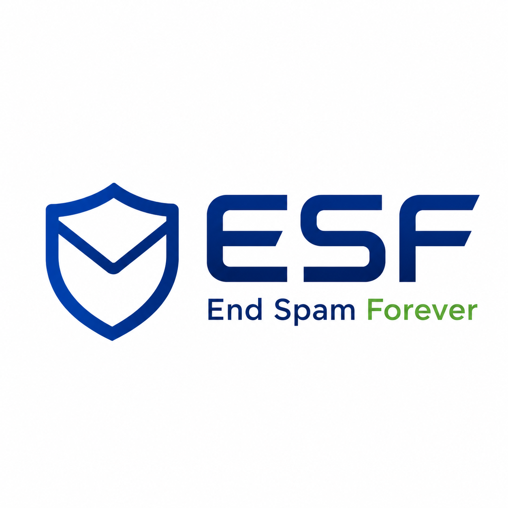

Technical Whitepaper — Version 1.0.1 (Pre-RFC) · 25 August 2026 · amended with reference-client learnings (Appendix D)
Objective. Make unsolicited bulk email economically unattractive through verifiable per-recipient computational cost - while remaining easy to integrate into existing email infrastructure and nearly invisible to ordinary users.
Draft status. This whitepaper defines the ESF v1.0 reference architecture and initial design direction. It is not an IETF standard. Wire syntax, work-profile parameters, policy discovery and SMTP extension details remain subject to implementation experience, benchmarking, interoperability testing and public standards review.
Email is intentionally cheap to send. That property made email universal, but it also makes high-volume abuse unusually inexpensive. ESF - End Spam Forever - introduces a vendor-neutral Proof-of-Work (PoW) layer for email. An untrusted sender performs a bounded amount of computational work for a specific recipient and message context, attaches the resulting compact proof, and the receiver verifies it at negligible cost relative to generating it. The work is not a payment, identity credential, reputation score, or content classification. It is a scarce-resource signal: the sender demonstrates that sending this message was not computationally free. ESF does not claim to have invented computational postage for email; the idea is thirty years old and has been implemented before (section 2). ESF is a modern, interoperable, receiver-policy-driven implementation of it, aimed at the deployment, interoperability, usability and algorithm-agility problems that kept earlier systems from broad adoption.
ESF is designed around two primary principles: integrability and usability. The initial ESF-Stamp profile can be implemented incrementally by mail clients, plugins, gateways and spam filters without replacing SMTP, while a future ESF-SMTP profile can enforce work per envelope recipient during MTA-to-MTA delivery. The protocol is algorithm-agile from the start: ESF v1 defines a highly portable SHA-256 profile and a memory-hard Argon2id profile, while allowing future work functions to be introduced without changing the core protocol.
ESF complements SPF, DKIM and DMARC rather than replacing them. Those mechanisms establish or align domain authorization; ESF answers a different question: how much scarce computational effort did the sender expend to reach this recipient?
For ordinary users, the cryptography is deliberately abstracted away. A receiver should be able to express ESF primarily as a simple traffic-light signal - green, yellow or red - and use that signal in automatic mail-handling policies. Algorithm, difficulty and timestamp details are diagnostic information, not a usability prerequisite.
Core proposition. A message that costs almost nothing to transmit can be sent millions of times. If an unknown sender must spend a small but non-trivial amount of work per recipient, normal correspondence remains practical while indiscriminate bulk delivery becomes progressively more expensive.
| Section | Purpose |
|---|---|
| 1-3 | Problem, prior art, resource-security perspective and positioning |
| 4-5 | Integrability, Usability and architecture |
| 6-9 | ESF-Stamp, work profiles, policy and future SMTP enforcement |
| 10-11 | Integration, automation and traffic-light UX |
| 12-13 | Threat model, operations and environmental constraints |
| 14-17 | Deployment, RFC/IANA path, open questions and conclusion |
| Appendices | Wire grammar, validation pseudocode, Thunderbird profile and reference-client learnings |
The economic asymmetry of email is the central problem. Creating and transmitting another copy of a message is extremely cheap for the sender, while receiving systems and users incur filtering, storage, attention and security costs. Traditional anti-spam systems therefore attempt to infer intent after the sender has already obtained the right to deliver traffic to the receiver.
Content filters are probabilistic and can be evaded or can generate false positives.
IP and domain reputation are valuable but create bootstrap problems for new senders and can be abused through compromised infrastructure.
SPF, DKIM and DMARC help validate use of domains; they do not make authorized bulk sending expensive.
Rate limits work within a provider or administrative domain but are not a universal end-to-end economic signal.
CAPTCHAs and challenge-response mail systems impose user interaction and create accessibility and backscatter problems.
ESF changes the sender-receiver cost relationship before the proof is treated as a positive delivery signal. The receiver can still use every existing anti-abuse control. ESF simply adds a new, independently measurable property: computational effort targeted at the receiving mailbox or receiving SMTP transaction. That property is not new in itself, and section 2 sets out the thirty years of prior art and the strongest published argument against it. What ESF proposes differently is that the cost is receiver policy rather than one globally fixed price, and that it is deployable in the clients and filters people already run.
The idea of computational postage for email is roughly thirty years old, and its history is not a single line of descent. Dwork and Naor proposed in 1992 that access to a shared resource, junk email being their motivating case, could be priced by requiring a moderately hard computation that the receiver can check cheaply [1]. Adam Back announced Hashcash in 1997 and consolidated it in a technical report in 2002; that report states that at the time of the earlier publication the author was not aware of the prior work by Dwork and Naor [2][17], and the hashcash.org related-work list repeats the point and adds that the cost functions proposed are different [19]. The accurate relationship is therefore independent rediscovery of a shared idea rather than descent: the 1992 constructions are number-theoretic - extracting square roots modulo a prime, plus schemes based on the Fiat-Shamir and the cracked Ong-Schnorr-Shamir signature schemes - and that paper contains no hash proof-of-work at all [1]. Hashcash was then carried into working email systems between roughly 2001 and 2016 by Camram, the SpamAssassin Hashcash plugin, MTA-side milters [43] and the PennyPost Thunderbird extension, while Microsoft Research's Penny Black programme investigated memory-bound alternatives to CPU-bound work because CPU speeds vary far more across machines than memory latencies do [3]. Bitcoin adopted hashcash in 2008 as the mechanism of its distributed timestamp server, citing Back's 2002 report; Dwork and Naor are not cited anywhere in the Bitcoin white paper [15]. Lowery's 2023 thesis is a recent restatement of the reading that Proof-of-Work is cost imposition rather than currency [14]. ESF comes last in that sequence, and section 2.9 states the strongest published argument that the whole approach does not work.
Subsections 2.2 onward follow that chronology. Section 2.1 keeps its place ahead of them because it is a framing section rather than a historical one, and because its number is cited from other documents and from code comments in the reference clients; the ordering of subsections here is not a claim about history.
ESF does not claim to have invented computational postage for email. It is a modern, interoperable, receiver-policy-driven implementation of a thirty-year-old idea, aimed at the problems that kept the earlier systems from broad adoption: deployment into software people already run, interoperability with current message formats and authentication mechanisms, usability for people who will never read a bit count, and algorithm agility so that the work function is a parameter rather than a permanent commitment. A long-form version of this section, with the full source apparatus and the verification status of each claim, is maintained separately in prior-art.md [46].
Most email security controls operate primarily in the logical domain: authenticate identities, validate signatures, classify content, compare reputation, or apply rules. ESF adds a different dimension. It asks an untrusted sender to demonstrate the expenditure of a scarce physical resource before the message receives positive delivery credit. The security property is therefore partly economic and physical, not only algorithmic.
Jason P. Lowery's 2023 MIT thesis SOFTWAR: A Novel Theory on Power Projection and the National Strategic Significance of Bitcoin proposes a much broader interpretation of Proof-of-Work: that coupling digital actions to measurable physical energy expenditure can create a form of physical cost and power projection in cyberspace [14]. ESF treats this as conceptual inspiration, not as an established consensus theory and not as a dependency of the protocol. ESF adopts only the narrower engineering insight that abuse becomes harder to scale when a digital action is bound to scarce computational resources.
Bitcoin is the most prominent large-scale operational example of Proof-of-Work. Its original design uses hash-based work to make the accepted transaction history costly to rewrite and to coordinate agreement without a central authority [15]. ESF does not use a blockchain, cryptocurrency, mining reward or global consensus. It reuses only the underlying scarcity primitive: provable computational work can impose a real marginal cost on an otherwise cheap digital action.
Resource-security principle. ESF deliberately introduces a small, bounded amount of physical resource cost into email delivery. The objective is not maximum computation; it is enough per-recipient friction to change abuse economics while keeping legitimate communication practical.
Dwork and Naor framed computational pricing as a third option beside legislation and monetary fees, arguing that legislation has definitional problems and that per-message money prices risk under-using the medium [1]. Their central abstraction is the pricing function, defined by three properties: it is moderately easy to compute, it is easy to check given the input and the claimed output, and it is not amenable to amortization, meaning that computing it for many messages costs about as much per message as computing it once. The work is applied to a function of the message and some additional information rather than to a free-floating token, and a difference parameter tunes the gap between the cost of evaluation and the cost of verification; the paper's illustrative figures are 10^-2 seconds to check against 10 seconds to evaluate. The paper also proposes a shortcut property, a trapdoor by which a party holding secret information can evaluate the function cheaply, so that a post office could sell sanctioned bulk mailings at a price of its own choosing. Two of these properties are load-bearing for ESF and one is deliberately not adopted: non-amortizability and binding the work to the message context survive unchanged into section 6.4, while ESF's work profiles are trapdoor-free, because a shortcut re-introduces exactly the central authority ESF avoids (section 4.4). The paper closes by observing that, unlike one-way functions, there is virtually no complexity theory of moderately hard functions - a gap that is still relevant when calibrating difficulty (section 16).
Back's 1997 announcement describes a partial hash collision based postage scheme in which the sender burns CPU to find a partial SHA-1 collision and the recipient verifies with a single hash [17]. The first implementation already binds the work to a resource or service name and to the date expressed as days since 1 January 1970, zero-filled to five digits, and it already ships a double-spend database with a validity period so that spent tokens can be rejected and expired entries discarded. The 2002 report generalises this into the notion of a cost-function that should be efficiently verifiable but parameterisably expensive to compute, distinguishes interactive cost-functions from non-interactive ones and notes that store-and-forward media such as email require the non-interactive kind, and characterises hashcash as trapdoor-free, non-interactive and publicly auditable [2]. It also records the change, suggested independently by Hal Finney and Thomas Boschloo, to collide against a fixed all-zero output string rather than against the hash of the service name, on the grounds that a fixed target is fair, simpler and halves verification cost; this is why the modern function is a partial pre-image search rather than a collision search, and why calling a v1 stamp a collision is imprecise. The report additionally names the pre-computation attack, in which an adversary spends a year minting tokens all valid on the same day, and proposes a slowly changing public beacon against it.
The wire format is not in the 2002 paper. It is documented on hashcash.org: stamps travel in an X-Hashcash header, one per recipient, and each recipient looks for the header addressed to it [19]. The hashcash(1) manual page defines the version 1 stamp as the colon-separated field list ver:bits:date:resource:[ext]:rand:counter, where bits is the number of claimed partial-pre-image bits, date is YYMMDD with optional hhmm[ss], resource is the resource string such as an IP or email address, ext is an extension field ignored in the current version, rand is a random string included to avoid pre-images colliding with other senders' stamps, and counter is the mutable field incremented during the search; the hash function is SHA-1, difficulty is counted in leading zero bits of the digest, the tool's default is 20 bits, and a 24-bit stamp took on average 25 seconds on the hardware of the day [18]. What a hashcash stamp binds is therefore the recipient resource and a date, and nothing else: not the message body, not the sender, not a policy version, not the algorithm in use. The ESF-Stamp field of section 6 is a direct descendant of this layout, and the fields it adds - algorithm and parameters, canonical recipient identifier, policy-relevant timing - are largely the ones that layout leaves out. The reference implementation remains available: Debian ships hashcash 1.22-2 in stable, testing and unstable as of August 2026 [44], which is evidence of availability and not of use. Note also that X-Hashcash was named in 1997 and documented in 2006, long before RFC 6648 in 2012 [6].
Camram, by Eric S. Johansson, is the most complete attempt at a deployable sender-pays email system, active from about 2001-2002 to about 2007 and released under a BSD licence in C and Python [20][21]. It described itself as a hybrid antispam system that deliberately makes payment information visible so that intermediate machines can filter closer to the point of ingress, while remaining compatible with existing email infrastructure. The mechanism has two tiers of stamp: hashcash for a first contact with an address, and opportunistic asymmetric-key signatures over the date, the recipient address and a digest of the body for subsequent mail, with the sender's public key travelling alongside the first hashcash-stamped message. The slogan for the whitelist half is that strangers cost and friends fly free, and sending mail also seeds the whitelist, on the stated assumption that someone who sends mail wants replies. On receipt, a message is admitted if it carries a valid stamp, or a valid signature, or comes from a whitelisted sender; otherwise it goes into a holding area and an auto-responder sends a postage-due reply. Implementation was deliberately a local proxy between mail client and network, on the explicit reasoning that it would be extremely difficult to modify or write plug-ins for every single email client.
Camram's incremental-deployment argument is the one ESF also makes, and it is worth restating in its own terms: for a hybrid sender-pays model, universal adoption is not necessary, because proof-of-work and whitelisting are layered on top of a content filter rather than instead of it, so the first user is never worse off than with the content filter alone, and as the number of stamps increases the harshness of the content filter can increase [20]. The project also documented its own weaknesses: hardware stamp accelerators, for which its best estimate was a 500-fold speed-up over software; botnet stamp farms; whitelist-by-name forgery, with whitelist-by-public-key as the intended answer; and stamp deflation under Moore's law, for which the answer was an adaptive rate driven by peer postage rates advertised in a header. Mailing lists were conceded as unsolved in the first stamp generation.
Camram's status today is dead. The last uploaded release file is camram-0.4.10.tar.gz dated 13 October 2004; the SourceForge page's much later last-update timestamp is project metadata and not a code release [21]. Project content on camram.org is last present in an April 2007 snapshot, and the project's later home under harvee.org now serves a parked-domain redirect [20]. No end-of-life statement by the author was found, so any causal account of why it stopped is inference rather than record. One contemporaneous friction point is documented: on the hashcash mailing list in August 2006 a third-party implementer criticised Camram's installation complexity as exceeding its practical utility in larger environments, and Johansson agreed that installation remained hard while maintaining that operation was pleasant [45]. That is evidence about a barrier, not about the project's end. Two ESF mechanisms are Camram's ideas carried forward: the trust-aware difficulty table of section 7.3 is the strangers-cost-friends-fly-free rule expressed as receiver policy, and the rate advertisement of section 8 is the peer-postage header expressed in DNS.
The Penny Black project ran at Microsoft Research Silicon Valley from about 2002 to 2006, with Dwork and Naor's 1992 work as its explicit starting point and a membership that included Andrew Birrell, Mike Burrows, Cynthia Dwork, Andrew Goldberg, Mark Manasse, Ilya Mironov and Ted Wobber [22]. Its stated scope was wider than hashcash: the currencies under consideration were CPU cycles, memory cycles and Turing tests, and three system organisations were named - payment pre-computed and tied to a particular message, challenge-response payment after submission, and ticket acquisition that pre-authorises a message. Recipients were expected to safe-list good senders aggressively. The Ticket Server is the most distinctive part: a ticket service issues tickets that are submitted with a message and that the recipient calls back to validate and cancel, clients may hold a balance at the server, and recipients may refund unused tickets, so a recipient can return a spam message to increment the sender's balance; the project page's illustration is that a thousand pre-paid tickets might be bundled with each new PC [22][24]. On the sources read for this document, calling Penny Black a reputation system would overstate it: aggressive safe-listing and the ticket refund loop are the closest mechanisms, and the refund loop is arguably a balance rather than a reputation. The programme's proposed price for unsolicited email was about ten seconds with safe-listed senders exempt, and its own worked example notes that someone sending 120 messages would experience a twenty-minute delay [23].
The memory-bound line of work is Penny Black's substantive technical contribution to this question. Its rationale is hardware equity: because memory-access latencies vary far less between machines than CPU speeds do, a memory-bound puzzle imposes a more uniform cost on a slow legitimate client and a fast attacker [3][25]. The measured spread is a factor of about four between slowest and fastest, against about ten for CPU-bound hashcash on the same machine set [3]. Two facts about that work matter for ESF beyond the algorithm. First, it was patented: US 7,149,801 B2, "Memory bound functions for spam deterrence and the like", was filed on 8 November 2002 and granted on 12 December 2006, and has since expired [26]; the practical consequence is recorded in section 2.7. Second, the factor of four is already inside the criticism of section 2.9 rather than an answer to it.
Penny Black's own closing statement is the clearest documented account in this history of why a computational-postage programme stopped. The project page's final content state says that the research component of this project is largely complete and that the group continues to investigate how these ideas might be realized in practice, and the accompanying note by Dwork and Goldberg says that technological feasibility of the computational scheme has been demonstrated and that making the scheme a reality is now a social, political, and business question [22][23]. The only implementation the page describes is a student project: four Stanford undergraduates, supervised by Dan Boneh, implemented the computational approach using a very simple proxy architecture. The page claims no shipped Microsoft product feature, and none was verified for this document; the frequently repeated claim that Microsoft shipped Penny Black should be treated as unverified.
The one email proof-of-work mechanism that had a widely installed consumer was Mail::SpamAssassin::Plugin::Hashcash, shipped from the SpamAssassin 3.0 series onward [27]. It reads an X-Hashcash header, falling back to a bare Hashcash header, parses v0 and v1 stamps, checks that the stamp's resource field matches one of the recipient addresses the administrator or user has declared acceptable through hashcash_accept, recomputes SHA-1 over the stamp and counts the leading zero bits. The rules file bins the result into HASHCASH_20 through HASHCASH_25 and HASHCASH_HIGH with default scores from -0.5 at 20 bits to -5.0 above 25 bits, and scores double spending at only +0.1, with the stated reason that a legitimate message can trip it when it is sent to a list and copied to the reader, so the small positive score merely cancels the bonus instead of punishing the sender [28]. Double-spend state is a per-user database file under the user's SpamAssassin directory, documented as not suitable for sharing between multiple users, and the source carries an unresolved expiry question, so entries are never expired [27]. The plugin was loaded by default and use_hashcash defaulted to 1, but the scoring path is inert unless someone configures hashcash_accept: a stamp whose resource does not match is logged as not accepted here and scores nothing [28].
Two properties of that design are directly relevant to ESF. First, it was a pure bonus mechanism: a valid stamp subtracted from the spam score, and there was no path by which the absence of a stamp added to it. That makes it a scoring signal rather than authentication or admission control, which is the same discipline section 11 specifies for the ESF traffic light, including the rule that during early adoption missing ESF should not by itself trigger automatic deletion. Second, the double-spend store's stated limits - per-user scope and no expiry - are precisely the two properties section 6.8 has to specify rather than leave open, which is why ESF defines a compact replay identifier with an explicit retention period and an explicit best-effort boundary beyond it.
The mechanism is gone. The UPGRADE notes for SpamAssassin 4.0.0 state that the HashCash module and support has been removed completely, as it has been long since deprecated, and the module is absent from the current plugin directory while the 3.4.x documentation still describes it [29]. The wording gives a status and not a causal analysis, and the release date of 4.0.0 was not verified for this document. The other widely deployed modern filter never had the feature at all: neither "hashcash" nor "proof of work" occurs anywhere in the rspamd 4.1 source tree or its module documentation, and whether such support was ever proposed for rspamd could not be established either way [30]. Any ESF filter-side integration therefore starts from an empty slot in both engines, and rspamd's negative-weight symbol model is the natural shape for it (section 10.2).
PennyPost is the nearest thing to prior art for the reference client of Appendix C: a Thunderbird extension, created by Aliasgar Lokhandwala with Jonas Oestman as contributor, that minted stamps on outgoing mail and detected and verified them on incoming mail, active from 2007 to 2016 [31][34]. It supported two work functions, selectable and independently enable-able: hashcash, CPU-bound, and MBound, the memory-bound pricing function of Dwork, Goldberg and Naor, which requires two fixed tables of random 32-bit integers, one of 16 MB and one of 1 KB [32][33]. Minting and verification were not performed in the extension; they were delegated to an external Java program shipped with it, so Java was a hard installation requirement [31].
Three details of PennyPost are load-bearing for ESF. First, recipient binding was real and is verifiable on both sides of the 1.5.4 source: on generation the extension iterates the To and Cc fields and passes each address to the minter as the stamp's resource, and on verification it rejects a stamp whose resource matches none of the reader's own addresses, with the diagnostic that the postage is not for us [34]. One honest caveat belongs with that: the add-on listing's claim that every recipient gets a unique stamp is only partly reflected in the send path, which sets a single X-Hashcash header value, and how multiple stamps were emitted in one message could not be established from the code read [31][34]. Second, PennyPost defined a receiver-facing capability header listing supported protocol versions and minimum costs with the sender's preferred protocol first, described in its own documentation as purely informative [32]; that is the same function section 8 assigns to a DNS record. Third, its memory-bound implementation shipped with a patent caveat: the MBound tables and implementation were provided solely for educational purposes, with the explicit notice that other use may require permission from Microsoft [33]. That is a documented case of patent risk shaping a deployment, and it is one reason ESF's memory-hard profile is Argon2id as specified in RFC 9106 [13].
PennyPost's declared compatibility is the other operative fact: its manifest targets Thunderbird from minimum version 2.0 to maximum version 38, and the last release, 1.5.4 of 2 March 2016, was a 16.1 MiB package - the MBound table - marked as experimental and requiring a restart [31][34]. The size was a documented adoption obstacle at the time: in the Mozilla feature request for hashcash support, a commenter in 2008 dismissed that enormous Pennypost extension as not a solution, and a later comment paraphrased the objection as adding a 16 MB library to a 6 MB client being unreasonable [35]. No retirement statement by the authors was found; development ceased in February 2016 and the compatibility ceiling is a fact, but attributing the end to Thunderbird's extension-API transition is inference. The ESF Thunderbird client covers the same ground differently: no external runtime, no bundled tables, no patent-encumbered work function, and the algorithm agility of section 6.5, so that a memory-hard profile is a parameter choice at send time rather than a shipping decision measured in megabytes.
Nothing in the table below is a claim of novelty for Proof-of-Work itself. It is a statement of which specific gaps in the earlier systems ESF is built to close.
| Dimension | Earlier systems | ESF |
|---|---|---|
| Work function | Fixed by the format: SHA-1 partial pre-image in hashcash and everything that consumed it; a separate header per function in PennyPost [18][32] | One algorithm field plus per-profile parameters, SHA-256 and Argon2id from v1, and registration or retirement of later functions without changing the message model (6.5, 7.2) |
| Difficulty | A bit count per stamp, in practice one deployment-wide value (hashcash's default of 20 bits; Penny Black's proposed ten seconds) [18][23] | Receiver policy, differentiated by sender class, discoverable and revisable, and explicitly not one globally fixed price (7.1, 7.3, section 8) |
| Recipient binding | Present and genuine: the hashcash resource field, one stamp per recipient, verified in PennyPost's own source [18][34] | The same property, with canonical identifier rules, a defined Bcc policy and stated multi-recipient semantics (6.3, 6.9) |
| Message binding | Absent from hashcash v1; Camram's second-tier signature covered a body digest [18][20] | Out of scope for v1 by decision, and recorded as an open profile question rather than assumed (6.8, D.3, section 16) |
| Freshness and replay | A date field plus a spent-token database; SpamAssassin's was per-user with no expiry [18][27] | Contemporaneity against the message rather than absolute expiry, with a specified replay identifier and retention period (6.7a, 6.8) |
| Receiver policy signalling | An expectation header in the 2001 draft Camram republished; PennyPost's informative capability header; Camram's proposed peer-rate header [20][32] | DNS discovery as an optional first stage, advisory by design and safe when unsigned (section 8) |
| Relationship to filtering | A bonus in the score, inert without configuration, removed in SpamAssassin 4.0.0 [28][29] | The same bonus discipline, specified as receiver UX and automation semantics with internal states distinguished (section 11, 11.1) |
| Client integration | An overlay extension with an external Java runtime and a 16 MB bundled table [31][33] | Two reference clients on current extension APIs, no external runtime, no bundled tables (10.1, Appendix C, Appendix D) |
| Standards path | No IETF document for Camram or PennyPost; X- header names throughout | A registrable ESF-Stamp field and an explicit Internet-Draft path (6.1, section 15, RFC 3864 [7]) |
Laurie and Clayton's "Proof-of-Work" Proves Not to Work is the standard citation against email proof-of-work, and it should be stated at full strength before anything is said in reply. It exists in two versions: the WEIS 2004 paper, internally dated 3 May 2004 and computed on November 2003 data [36], and a version 0.2 dated 12 September 2004 and re-based on mid-2004 data [37]. Both ask one quantitative question: how hard must the puzzle be to suppress spam meaningfully, and is that difficulty compatible with how legitimate senders actually behave.
The required per-message cost is derived twice, by independent routes that land in the same region. The economic route builds a spammer's cost base and the market price of a spam message: in version 0.2, at a total cost of no more than 100 cents per machine per day, a spammer breaks even sending 20,000 emails per machine per day at 0.005 cents each, so preventing that volume requires each calculation to take at least 4.3 seconds, and at the historical price of 0.100 cents the spammer must be held to 2,000 emails per day, which sets the cost to 43.2 seconds; the WEIS version's corresponding figures are 5.8 seconds and, at 1,750 emails per day, 50 seconds [36][37]. The stolen-computation route assumes the spammer buys no hardware at all: a pool of a million compromised machines would have to send 47,000 emails each per day to sustain observed volumes, and reducing spam to one per cent of email means holding each machine to 250 emails per day, which requires a cost of 346 seconds per message [37].
The decisive argument is neither of those numbers. It is the headroom. Between ordinary legitimate use and the deterrent limit there is a factor of only 4 to 8 - version 0.2 computes a headroom of 8 on the economic route, after folding in the best memory-bound speed spread available, and about 4 on the stolen-compute route - where the paper states that for proof-of-work schemes to be plausible one would be looking for many orders of magnitude between the work done by the good guys and that achievable by the bad guys [36][37]. And the distribution has a long tail, measured on a weekday of outbound smarthost logs from a large UK ISP. In the WEIS version, at the derived daily limits of 1,750 and 250 messages per machine per day, a proof-of-work scheme would prevent legitimate activity by 0.13% and 1.56% of customers, and the corresponding hourly limits of 73 and 11 messages per hour would inconvenience 1% and 13% of legitimate email users [36]. In version 0.2, at 8 and 4 times the 60-message daily average, the daily figures are 0.62% and 1.56%, and the hourly limits of 83 and 11 messages per hour would inconvenience 13% and 5% [37]. The two versions pair different percentages with different limits, so these figures must always be cited with their version and their limit; the number usually repeated is a daily one, which is the paper's mildest case. The reason the hourly distribution is so much worse than the daily one is behavioural and is not fixable by tuning: spammers send around the clock, and people do not.
Criticism first. Laurie and Clayton conclude that a universal, uncomplicated proof-of-work scheme, in which every email carries a proof at a globally fixed price, is not viable - and that they had to assume special exceptions for mailing list email even to make it analysable. On their numbers that conclusion holds, and ESF does not dispute it. ESF is not that scheme. Whether ESF escapes the conclusion is an empirical question that only deployment measurement can settle, and the benchmark phase of section 14 exists for that reason.
Two things must be said plainly, because they are what makes this section credible rather than promotional.
First, memory-hardness is not a rebuttal to Laurie and Clayton; it is already priced into their numbers. Version 0.2 cites the memory-bound work of Abadi et al. and Dwork et al. itself, notes that the best achieved spread between slowest and fastest machines is a factor of four, and folds exactly that factor into its own arithmetic - which is why its headroom figure is 8 rather than 33 [37][3][25]. Invoking Argon2id against that argument therefore repeats the argument. ESF's Argon2id profile is justified on the narrower hardware-equity ground of section 7.2, that memory-bound work compresses the spread between a phone and specialized hardware, and not as a refutation of the 2004 analysis.
Second, their objection to receiver-side policy is not arithmetic at all. Neither version analyses a hybrid or receiver-policy design, and both say so; what version 0.2 offers instead is a prediction, that such schemes, if they ever exist, will be very complex and, the authors believe, very fragile [37]. That is precisely where ESF sits, and that prediction remains unfalsified. It is also the honest reading of the published counter-analyses. Liu and Camp accept the Laurie and Clayton parameters wholesale and argue that the damage is done by the uniformity assumption: weighting the work requirement by a sender-reputation function reproduces an expected cost near 317 seconds for a sender carrying a spam flag while leaving about 13 seconds for the great majority of senders - but the result rests entirely on assumed filter accuracies of roughly 98-99% detection and 1% false positives, and nothing in it is measured on a deployed system [38]. Gardner-Stephen's Targeted-Cost Proof-of-Work is closer still to a receiver-policy design, letting the receiving site's own filter decide which messages are challenged, and claims an advantage approaching 1,000 to 1 in favour of legitimate mail at 99.9% filter accuracy - falling to 20 to 1 at 95% accuracy, which is the figure that matters [39]. The general form of the concession is unavoidable: a receiver-policy design inherits its whole margin from the filter it sits on, the published counter-analyses derive their advantage from filter accuracy, and they lose it as accuracy falls. ESF's margin is therefore only as good as the receiver's classifier, and section 16 should be read with that in mind.
What ESF does claim is narrower, and is a matter of design rather than of arithmetic. ESF does not rely on one globally fixed proof-of-work price per message. Difficulty is receiver policy (section 7.1), differentiated by sender class so that known correspondents, consented bulk senders and unknown senders are treated differently (section 7.3), signalled rather than assumed (section 8), and consumed as a graded scoring input rather than an admission gate (section 11). That machinery is specified in those sections and is not restated here. The difference is what makes the 4-to-8 headroom argument not directly applicable, because the price paid by the ordinary sender in the tail of the distribution is not the price a suspected bulk sender pays. It is not a demonstration that the objection has been answered.
Work is not authentication. ESF does not prove who sent a message. A valid stamp proves only that measurable computational work was performed for a specific recipient and message context, and it says nothing about identity, honesty, malware safety or intent. ESF therefore complements SPF, DKIM, DMARC, S/MIME and OpenPGP rather than replacing any of them (section 3), and none of the objections in this section is answered by an appeal to a signature.
The objection that spammers do not pay for their computation is the strongest empirical one, and the measurements support it. A study of captured Pushdo/Cutwail command-and-control servers records 121,336 unique bot IP addresses online per day on average and 2,536,934 distinct addresses over the observation period, with 516,852,678,718 messages accepted for delivery out of 1,708,054,952,020 attempts since June 2009, an accepted-delivery rate of about 30% [40]. The same study documents the market: spam-as-a-service at roughly 100 to 500 US dollars per million messages, and botnet rental capable of 100 million messages per day for 10,000 US dollars per month. Dividing one of those figures by the other gives a per-message price of the order of a thousandth of a cent, but that division is arithmetic on two published figures and is not a number the paper states. The revenue side is thin in proportion: the Spamalytics measurement of a real campaign found 28 conversions from about 350 million pharmacy messages, a rate well under 0.00001%, and its authors read their own result as suggesting that margins may be meagre enough that spammers are economically susceptible to new defences [41]. Two further measured facts cut in ESF's favour without rescuing it: bots are a depreciating stolen asset, with about 12.8% blacklisted within an hour of coming online, 75.3% within six hours and 90% within about eighteen hours [40]; and botnet population figures are far less certain than they look, since the same three months of data at one ISP support estimates of 190, 303, 836, 2,451 or 5,421 bots depending on the counting method [42]. Any machine-count parameter in this debate - Laurie and Clayton's one million, Gardner-Stephen's ten million - is a chosen parameter and not a measurement.
Botnets. ESF raises the resource cost of abuse. It does not remove access to stolen computation, and it does not solve botnets. On the model of section 7.4 the effect on a compromised host is a throughput brake rather than a wall, and part of that cost lands on the victim whose machine and electricity are being spent - which is a harm to be accounted for (section 13), not a result to be claimed.
Bulk mail that the recipient asked for is the case every one of these systems handled least well. Laurie and Clayton had to assume special exceptions for mailing list email to make a universal scheme analysable at all, and state that even with that assumption the scheme fails to be effective; their own measurement at a UK ISP put mailing-list traffic at about 40% of non-spam email [36][37]. Camram conceded the case outright, recording that the answer for the first stamp generation was to do nothing about mailing lists [20]. The Mozilla feature request records the same problem from a client developer's side: systems that send legitimate machine-generated mail, the bug tracker itself being the example given, would need blanket whitelisting, which limits their utility and increases exposure [35]. Dwork and Naor's own answer was the shortcut property, a trapdoor letting a post office sell sanctioned bulk mailings cheaply [1] - a design ESF does not adopt, because it re-introduces a central authority with commercial discretion over who may send. ESF's answer is receiver consent expressed as policy: section 7.3 gives a confirmed opt-in bulk sender an exemption, on the explicit principle that computation should not be spent merely because mail is bulk. The detailed semantics for mailing lists, aliases and forwarding are not settled; section 10.4 sketches them and section 16 lists them as an open question, and this document does not claim otherwise.
Only some of these projects said why they stopped, and the difference between what is recorded and what is inferred should be kept visible. What is recorded: Penny Black declared its research component largely complete and its remaining obstacles social, political and business rather than technical [22][23]. SpamAssassin removed the Hashcash module completely in 4.0.0 as long since deprecated [29]. Mozilla resolved the long-standing request for hashcash support in Thunderbird as WONTFIX on 9 August 2009, on the stated ground - quoted here as written, garbled sentence included - that "a solution that requires near universal adoption isn't before it's practical isn't something for which the cost is worth considering", a premise the next comment in the bug disputed [35]. The same bug records the substantive objection set from a mainstream client developer in 2008: that most email came from infected machines, so the cost falls on ordinary users rather than on spammers; that the idea cannot work until major clients including Outlook support it; that Microsoft claimed a patent; that legitimate bulk senders would need blanket whitelisting; and that the net effect is to tax regular users without stemming the flood [35]. PennyPost's own documentation records patent risk directly, shipping its memory-bound function for educational use only [33]. And Camram's installation complexity was criticised by a third party and conceded by its author [45]. What is not recorded: neither Camram nor PennyPost left any statement of why development ended, so the usual explanations - the arrival of good Bayesian filtering and large-provider reputation, single-maintainer attrition, Thunderbird's extension-API transition - are inference, and are labelled as such here.
Read together, that list is mostly not a list of arithmetic failures. It is deployment friction, an install-base coordination problem, patent risk, a 16 MB download, a scoring hook that stayed inert without configuration, and the absence of any standards-track document to point at. The one genuine arithmetic failure is Laurie and Clayton's, and section 2.9 records that it remains open. What has changed since is narrow but real: a memory-hard function is now specified in an RFC with test vectors and is available in libraries and in WebAssembly, although RFC 9106 is Informational rather than standards-track, its first recommended option is a single pass over 2 GiB of memory, and it recommends Argon2d rather than Argon2id for proof-of-work applications [13]; both major desktop clients now expose header and send-interception APIs to extensions (section 10.1, Appendix D); receiver policy can be published through the same DNS pattern that SPF, DKIM and DMARC made routine (section 8); difficulty can be receiver policy instead of a global constant (section 7.1); and a registrable header field with a standards path is available where the earlier systems had only X- names (section 15). None of that guarantees adoption. It is the reason this project believes the problem is worth approaching again, not a claim that the outcome will differ.
| Mechanism | Primary question | What ESF adds |
|---|---|---|
| SPF | Is this SMTP source authorized to use a domain in the envelope/HELO context? | No replacement; ESF adds sender effort. |
| DKIM | Did a domain sign selected message content and headers? | ESF can use DKIM identity as a trust/exception input. |
| DMARC | Does the visible author domain align with authenticated SPF/DKIM identity and policy? | ESF adds economic friction even when domain use is authorized. |
| ARC | What authentication assessments were observed through intermediaries? | Potential future carriage of ESF assessment through forwarding paths. |
| ESF | Was sufficient computational work performed for this recipient/message context? | A scarce-resource signal, not identity or content safety. |
This separation is important. A DMARC pass, for example, establishes authorized domain use but is not itself a guarantee that a message is desirable or safe; the current DMARC specification explicitly treats such results as inputs to broader receiver policy [8]. ESF follows the same principle: a valid stamp is evidence of work, not evidence of benevolent intent.
ESF must fit into email as it exists. Adoption cannot depend on a coordinated flag day, replacement of SMTP, a central service, or simultaneous support by every mail provider. A useful implementation must be deployable at one integration point and still provide value when adjacent systems are unaware of ESF.
The first deployment path is therefore deliberately additive: generate or verify a compact stamp in a mail client, webmail application, gateway or spam filter; transport the message through normal SMTP; and expose the result to existing filtering and policy engines. Server-to-server ESF negotiation is a later strengthening step, not a prerequisite.
Implementations SHOULD keep the protocol core independent of any specific mail client or vendor so that the same test vectors and verification library can be reused by Thunderbird, Outlook integrations, webmail, MTAs, Rspamd, SpamAssassin and hosted email services.
The optimum is no user interface at all. ESF produces a signal for the machinery that already decides where mail lands: the verification result belongs in the existing spam score, filter rules and inbox placement, with nothing for the user to configure and nothing for them to interpret. A receiver who never learns that ESF exists, and whose unwanted mail merely became more expensive to send, is the success case. This also makes the strongest integration points - gateways, spam filters and hosted providers - the ones that need no user-facing work at all.
During adoption, a visible indicator is still worth having. Almost no mail carries a stamp yet, receivers are still calibrating policy, and implementers need to see what verification actually produced. Early clients SHOULD therefore show the result, and MAY expose the underlying detail, while treating both as transitional rather than as the goal.
Where an interface is shown, it must require almost no cryptographic knowledge. The user-facing concept is a traffic light, not a hash algorithm. Green means the message satisfies the receiver's ESF policy, yellow means a valid but weak or non-preferred proof is present, and red means no acceptable ESF proof is available.
Algorithm, difficulty, memory cost, timestamp and verification details MAY be available under an Advanced or Details view for diagnostics and expert users, but they MUST NOT be required to understand or operate ESF.
Two first-order requirements. 1. Integrability: ESF must be incrementally deployable across existing email clients, servers and filters.
2. Usability: ideally no user-visible surface at all, because the result feeds existing spam filtering; where something is shown, it must not exceed green, yellow or red plus sensible automatic actions.
Per-recipient cost: bulk delivery should scale approximately with the number of recipients, not only the number of unique message bodies.
Asymmetric verification: producing a proof must be materially more expensive than validating one.
Incremental deployment: useful implementations must be possible before global MTA support exists.
No central authority: the core protocol must not require a global token issuer, payment processor or sender registry.
Algorithm agility: the work function and difficulty policy must be replaceable without redefining the entire protocol.
Privacy awareness: BCC and recipient identifiers must not be unnecessarily exposed.
Compatibility: ESF must coexist with SMTP, MIME, forwarding, mailing lists, DKIM, SPF, DMARC, ARC, S/MIME and OpenPGP.
Fail-safe adoption: absence of ESF should initially be neutral; malformed or fraudulent proofs may be negative signals.
Authenticating the human sender.
Proving that message content is safe, truthful or non-malicious.
Replacing existing anti-spam classifiers or reputation systems.
Eliminating targeted phishing from well-resourced attackers.
Guaranteeing equal computational cost across every hardware class.
Requiring all legitimate bulk mail to perform PoW; authenticated/consented streams can be exempted by receiver policy.
ESF is intentionally layered to maximize integrability. The same proof concept can be generated or consumed at different points in the existing email path, allowing adoption to begin in a single client or filter and later move toward stronger server-side enforcement. Enforcement strength depends on where the proof is created and verified.
Figure 1 - Two deployment modes: message-level ESF-Stamp and future SMTP-envelope enforcement.
The sender creates a proof and adds one or more ESF-Stamp header fields to the RFC 5322 message. Receiving clients, gateways or filters verify the stamp. This is the fastest route to a working ecosystem because RFC 5322 permits optional header fields, and current Thunderbird APIs can add custom compose headers and read incoming message headers [5][9].
A future SMTP service extension moves the proof into the SMTP envelope. The receiving MTA advertises ESF support through EHLO, and proof material is associated with each RCPT TO transaction. This is the strongest model because the receiver knows the actual envelope recipient, BCC information never needs to be embedded in message headers, and a proof cannot be amortized across recipients without the receiving MTA detecting it. RFC 5321 explicitly provides a service-extension model and permits registered parameters on SMTP commands [4].
Header naming decision. The standards-track target is ESF-Stamp, not a new X- prefixed permanent field, because RFC 6648 deprecates the X- convention for new application parameters [6]. However, current Thunderbird MailExtension customHeaders require X- names, so X-ESF-Stamp is acceptable as a prototype transport compatibility field until a standards-compliant integration path exists.
ESF-Stamp: v=1; alg=sha256; d=22; t=1787651400;
sid=F8Y0...Q9; rid=AP3K...7N; mid=2T1C...ZZ;
salt=7a12d4b5e6891f20; nonce=000000000019d82cThe line folding above is illustrative. A real implementation must serialize the field according to the final ABNF and normal email header folding rules.
| Field | Meaning | v0.1 requirement |
|---|---|---|
| v | ESF protocol version | MUST be 1. |
| alg | Registered work-function identifier | Initial ESF v1 profiles: sha256 and argon2id. Receivers decide which profiles they accept or prefer. |
| d | Difficulty parameter | Profile-specific target difficulty. Values are not comparable across different algorithms. |
| t | Stamp creation time | Unix time in UTC seconds. Receivers bound it against the message the stamp arrives with, not against their own clock; see 6.7a. |
| sid | Sender binding token | Hash of canonical RFC5322.From mailbox used for anti-reuse binding. |
| rid | Recipient binding token | Salted hash of canonical recipient mailbox; receiver recomputes locally. |
| mid | Message binding token | Hash of normalized Message-ID value. |
| salt | Random per-stamp salt | At least 64 random bits; 128 bits recommended. |
| nonce | Work nonce | Variable searched by sender until target condition is satisfied. |
For the prototype profile, mailbox canonicalization is intentionally conservative: trim surrounding whitespace, parse the addr-spec, lowercase the domain, and preserve the local-part exactly unless an implementation has authoritative provider-specific canonicalization rules. ESF MUST NOT assume that dots, plus tags or case are globally insignificant in local-parts.
sid = BASE64URL(SHA256("from:" || canonical_from))
rid = BASE64URL(SHA256("to:" || canonical_recipient || 0x00 || salt))
mid = BASE64URL(SHA256("mid:" || normalized_message_id))The salted recipient token limits casual disclosure compared with placing the clear-text recipient address into the stamp. It does not provide strong anonymity against an observer who can guess the mailbox and test candidates. BCC therefore requires additional handling described below.
The prototype SHA-256 profile constructs a deterministic byte string from all proof fields except the derived hash itself. Fields are length-delimited or encoded in an unambiguous canonical order. A compact reference representation is:
work = UTF8("ESF1\n" +
"alg=sha256\n" +
"d=" + d + "\n" +
"t=" + t + "\n" +
"sid=" + sid + "\n" +
"rid=" + rid + "\n" +
"mid=" + mid + "\n" +
"salt=" + salt + "\n" +
"nonce=" + nonce + "\n")
h = SHA256(work)
valid iff leading_zero_bits(h) >= dFor difficulty d, a uniformly random hash succeeds with probability 2^-d, so the expected number of nonce trials is 2^d. Difficulty therefore has an exponential scale: increasing d by one approximately doubles expected work.
ESF is algorithm-agile by design. Version 1 starts with two work profiles rather than treating one hash function as permanent: SHA-256 provides maximum portability and a straightforward Hashcash-style baseline; Argon2id provides a memory-hard alternative that ties each attempt to both computation and memory resources. RFC 9106 explicitly specifies Argon2 as a memory-hard function for password hashing and Proof-of-Work applications [13].
The sender includes the selected profile and every profile-specific parameter in the canonical work input. The receiver applies its own local policy for accepted algorithms, parameter bounds and minimum work. A sender therefore cannot downgrade a receiver by declaring a weak algorithm or trivial parameters.
| Profile | Cost model | Initial role |
|---|---|---|
| sha256 | Compute-bound leading-zero target. Extremely portable and cheap to verify. | Baseline interoperability and early deployment profile. Specialized hardware advantage must be accounted for in receiver policy. |
| argon2id | Memory-hard work with bounded memory, iterations and lanes plus a target condition. | Stronger resource-binding profile for receivers that want to reduce the advantage of massively parallel/specialized hardware. |
An illustrative Argon2id stamp may carry profile parameters such as mem=16384, iter=1 and lanes=1 together with d. These numbers are not normative. ESF must benchmark real desktop, mobile and server hardware before standardizing profiles. Difficulty numbers for SHA-256 and Argon2id MUST NOT be compared directly.
ESF-Stamp: v=1; alg=argon2id; mem=16384; iter=1; lanes=1; d=8;
t=1787651400; sid=F8Y0...Q9; rid=AP3K...7N; mid=2T1C...ZZ;
salt=7a12d4b5e6891f20; nonce=00000000000003afObtain the receiver policy or apply the sender's default ESF difficulty.
Generate timestamp and cryptographically random salt.
Canonicalize sender, intended recipient and Message-ID, then compute sid, rid and mid.
Iterate the nonce in a worker thread or equivalent background execution context.
Stop when the configured target is met or when the user/policy cancels computation.
Serialize and attach the ESF-Stamp field without blocking the compose UI.
Verification is deliberately ordered from cheapest to more expensive checks to prevent attacker-controlled headers from creating a receiver-side denial of service.
Figure 2 - Stamp generation, verification and policy use.
A stamp should be judged by whether its work belongs to this message, not by how much time has passed since it was
produced. Receivers SHOULD therefore require that a stamp was minted within a bounded interval before the message
came into being — a contemporaneity window, for which 24 hours is a reasonable starting value — and MAY additionally
apply an absolute maximum age. The two are independent, and only the first carries a security property.
The contemporaneity requirement is what keeps a sender paying as they go. Without it, an operator with spare capacity
can mint stamps for months on idle hardware, or on cheap off-peak power, and release them in a single campaign: the
total work per recipient is unchanged, but the rate at which work must be produced — the property that actually
limits a campaign — disappears. A stockpiled stamp no longer matches the message it is attached to and is refused.
An absolute expiry, by contrast, answers a question ESF does not ask. A proof of work does not become untrue with
age, and a fixed window makes a correctly delivered message unverifiable later: mail delayed in a queue, held for
moderation, or simply read from an archive months afterwards would be downgraded for reasons that have nothing to do
with the sender's effort. Implementations SHOULD default to no absolute expiry and expose it as an option.
Which instant counts as "when the message came into being" matters, because the Date header belongs to the sender.
Receivers SHOULD prefer a timestamp they or their own infrastructure produced — the topmost Received field, or the
delivery time recorded by the receiving system — and fall back to Date only when none is available. With a
receiver-produced reference, back-dating a message to match a stockpiled stamp does not help the sender. Where only
Date is available, a stockpiled stamp can still be smuggled through by back-dating the message, at the cost of the
message presenting itself as old, which is a signal in its own right.
Verification MUST NOT use the moment of reading as the reference. A receiver that compares a stamp against its
current clock at display time will turn every stored message stale, reversing a result that was correct on arrival.
ESF does not need to cryptographically authenticate message content to achieve its principal economic goal, but it must prevent the same successful stamp from being accepted repeatedly for a recipient. Receivers SHOULD cache a compact stamp identifier for an explicit retention period. With no absolute acceptance window (6.7a) that retention cannot simply follow it, so it becomes a value of its own: replay detection is exact within the retention period and best effort beyond it. A suitable identifier is SHA-256 of the canonical ESF-Stamp field. A second use for the same local recipient is classified as replay and receives no positive ESF credit.
Binding to Message-ID makes accidental stamp reuse across messages unlikely and raises the cost of intentional reuse. A future strict profile may additionally bind a DKIM-style canonical body hash; the trade-off is fragility when intermediaries modify content.
Recipient binding is where message-header PoW is inherently weaker than SMTP-envelope PoW. A message addressed to multiple visible To/Cc recipients may carry multiple ESF-Stamp fields, one per recipient. That causes work to scale with recipients, which is desirable. BCC is different: embedding a BCC recipient identifier in a common message can leak information about the hidden recipient.
Preferred: generate a distinct message copy for each BCC recipient and attach only that recipient's private stamp to that copy.
If an MUA cannot safely create per-BCC copies, it SHOULD omit recipient-specific ESF credit for BCC rather than expose the mailbox.
Receivers SHOULD assign lower assurance to domain-scoped or otherwise amortizable proofs.
The future ESF-SMTP profile solves this cleanly because the actual recipient is already known in the RCPT TO transaction and is never carried in the message body or headers.
Implementation note: current client APIs (Thunderbird customHeaders, Outlook internetHeaders) keep at most one header value per field name, so the reference clients serialize all stamps of a message as a comma-separated list inside a single ESF-Stamp field. Receivers MUST accept both forms - one stamp per field and a stamp list within one field - subject to the anti-DoS bounds of section 6.7 (see Appendix D).
A fixed global number is useful for a prototype but is not suitable as a permanent Internet-wide policy. Hardware capability, energy constraints and abuse economics change over time. ESF therefore separates protocol syntax from receiver policy.
For the start of deployment the reference clients default to 20 bits, and that number is chosen against the send flow rather than in the abstract: it takes a few seconds on an ordinary machine, which a client can absorb by computing past its quiet phase while showing progress, and it costs a bulk sender four times what 18 bits does. It is a starting value to be revised from deployment evidence (section 14), not a recommendation for all time - and a receiver's minimum for a green result is a separate decision from a sender's baseline.
| Difficulty | Expected SHA-256 trials | Relative work |
|---|---|---|
| 18 | 262,144 | 1/4 of the starting default |
| 20 | 1,048,576 | starting default of the reference clients |
| 22 | 4,194,304 | 4x the starting default |
| 24 | 16,777,216 | 16x |
| 26 | 67,108,864 | 64x |
These values describe algorithmic work, not wall-clock time. Wall-clock time depends heavily on implementation, processor, GPU/ASIC availability, thermal limits and parallelism. ESF implementations should calibrate against measured local performance rather than promise a universal number of milliseconds.
SHA-256 has excellent interoperability, compact proofs and extremely cheap verification, which makes it ideal for bootstrapping an ecosystem. Its weakness is also clear: GPUs and especially specialized hardware can evaluate it disproportionately efficiently. Argon2id complements it with a memory-hard cost model standardized in RFC 9106 [13]. ESF v1 therefore starts with both profiles and lets receiver policy decide whether SHA-256 is sufficient, weak-but-acceptable, or not accepted for a given context.
Policy thresholds are profile-specific. For example, a receiver may classify a particular SHA-256 proof as yellow while accepting a calibrated Argon2id proof as green. ESF does not define a universal conversion between work functions; operational benchmarking determines their relative policy strength.
Protocol requirement. ESF MUST remain algorithm-agile. The initial interoperable family includes SHA-256 for maximum portability and Argon2id for memory-hard work. Receivers independently define accepted profiles, parameter bounds and minimum strength, and future algorithms can be registered or retired without changing the base ESF message model.
The most practical receiver policy does not charge every message equally. ESF is strongest when it acts as a friction mechanism specifically for unknown or low-trust senders.
| Context | Illustrative ESF policy |
|---|---|
| Known personal contact | No PoW or minimal work. |
| Previously replied-to correspondent | No PoW or low work. |
| Authenticated trusted organization | No PoW or policy-defined exemption based on DKIM/DMARC identity. |
| Unknown sender | Normal PoW requirement. |
| Low-reputation / suspicious stream | Higher PoW requirement or quarantine. |
| Confirmed opt-in bulk sender | Receiver/provider exemption; do not waste computation merely because mail is bulk. |
The following model quantifies the economic effect of both initial profiles on a mid-size bulk campaign of 10 million messages per day, one stamp per recipient. All monetary figures are US dollars and are order-of-magnitude estimates for rented capacity at roughly 0.02 USD per CPU core-hour, 0.35 USD per GPU-hour and 0.10 USD per kWh; they move with hardware and energy prices and MUST be re-derived by the Phase 0 benchmark campaign rather than quoted as results. The single-threaded JavaScript rate is measured with the reference implementation (Appendix D.10); optimized-native, GPU and ASIC rates are literature and benchmark estimates that MUST be replaced by the Phase 0 benchmark campaign before any difficulty value is standardized.
Approximate SHA-256 rates per actor: legitimate client in a JavaScript runtime ~0.2 MH/s per thread (measured), optimized native code with SHA extensions ~10 MH/s per core, one current high-end GPU ~20 GH/s, one commodity hashing ASIC ~100 TH/s.
| SHA-256, d=20 (2^20 ≈ 1.05M trials/recipient) | Sustained load for 10M msg/day | Estimated added cost per day |
|---|---|---|
| Rented cloud CPUs (native, SHA extensions) | ~12 cores | ~6-11 USD |
| One high-end GPU | ~9 minutes of GPU time (<1% utilization) | ~0.02 USD electricity |
| Hashing ASIC | ~0.1 s of device time | negligible |
| Botnet sending natively | throughput drops to ~5 msg/s per bot | victim pays energy; campaign duration x100+ |
| Stolen webmail accounts (JavaScript rate) | ~1 msg per 5 s per bot | throughput reduced x1000 |
The same difficulty costs a legitimate JavaScript client roughly five seconds per recipient. The asymmetry between that client and a GPU is therefore about five orders of magnitude: a compute-bound SHA-256 difficulty high enough to burden a GPU-equipped operator (roughly 34-35 bits for a four-digit USD daily cost at this volume) would require hours per message from legitimate clients. Compute-bound difficulty alone cannot close this gap; it remains valuable as a portable bootstrap profile and as a throughput brake on botnets and abused accounts.
Argon2id changes the picture because every evaluation must fill the configured memory. With the illustrative profile m=16384 (16 MiB), t=1, lanes=1, d=8 (2^8 = 256 expected evaluations per recipient, each touching roughly 32 MB), estimated rates are ~15-25 evaluations/s in a browser/WASM client, ~30-50 per native CPU core, ~300-600 per multi-core server (memory bandwidth, not cores, is the bottleneck) and ~5,000-15,000 for one 24 GB high-end GPU whose advantage is bounded by memory bandwidth and data-dependent addressing. No commodity Argon2id ASIC exists; the theoretical specialized-hardware advantage is bounded by memory cost to an estimated factor of 2-10.
| Argon2id m=16 MiB t=1 d=8, 10M msg/day (~30,000 evals/s sustained) | Sustained load | Estimated added cost per day |
|---|---|---|
| Rented cloud CPUs | ~50-100 servers (bandwidth-bound) | ~550-1,650 USD |
| High-end GPUs | ~2-6 devices permanently | ~22-66 USD |
| Specialized hardware | not commercially available; bounded advantage | capital-intensive, limited gain |
| Botnet sending natively | ~1 msg per 5-8 s per bot; 16 MiB peak RAM per attempt limits parallelism on weak hosts | campaign duration x1000 |
The user-visible cost of this Argon2id profile (~10-15 s per recipient in a WASM client) is comparable to SHA-256 at d=20-22, but the client-to-GPU asymmetry shrinks from ~10^5 to an estimated factor of ~300. Parameters scale the effect linearly: quadrupling memory quadruples attacker cost without forcing a quadrupled user wait, because the receiver policy can lower d in exchange. Two costs must be engineered deliberately: verification of one Argon2id stamp costs the receiver tens of milliseconds and the configured memory rather than microseconds, which makes the bounds of section 6.7 and a memory cap mandatory before any Argon2id verification is attempted (section 16); and constrained devices need the delegation and limit mechanisms of section 13.
A sender needs to know what work is useful before transmitting a message. ESF proposes DNS discovery as an optional first-stage mechanism because it is cacheable, decentralized and already familiar to email operators through SPF, DKIM and DMARC. This is a proposal for experimentation, not yet a registered DNS scheme.
_esf.example.org. 300 IN TXT "v=ESF1; p=optional; alg=argon2id,sha256; profile=default; maxage=604800"| Tag | Meaning |
|---|---|
| v | Policy version; ESF1. |
| p | Receiver posture: none, optional, prefer, require. |
| alg | Ordered list of accepted work profiles. |
| d | Requested baseline difficulty for unknown senders. |
| maxage | Contemporaneity window in seconds: how long before its message a stamp may have been minted (6.7a). Not an absolute expiry. |
| contact | Optional HTTPS URI for ESF policy documentation; not required for validation. |
DNS policy is advisory in the initial client profile. A receiver always applies local policy at validation time. DNSSEC can protect the discovery record where deployed, but ESF must remain safe when DNS policy is unsigned: an attacker who removes or alters an advisory record must not gain cryptographic authority over receiver validation.
RFC 5321 provides a formal SMTP extension mechanism in which servers advertise capabilities using EHLO and extensions can define parameters for MAIL or RCPT commands [4]. ESF can use that architecture to enforce one proof per envelope recipient at MTA-to-MTA time.
S: 220 mx.example.org ESMTP
C: EHLO sender.example
S: 250-mx.example.org
S: 250-ESF v=1 alg=argon2id,sha256 profile=default challenge=R4nd0m...
S: 250 PIPELINING
C: MAIL FROM:<sender@sender.example>
C: RCPT TO:<alice@example.org> ESF=<recipient-proof>
S: 250 2.1.5 Recipient acceptedThis syntax is illustrative only. A real SMTP extension would require an Internet-Draft defining the registered EHLO keyword, challenge lifetime, recipient parameters, retry semantics, enhanced status codes, relay behavior, maximum command-length impact and interoperability with queueing/retries.
Per-recipient accounting is authoritative because RCPT TO is explicit.
BCC privacy is naturally preserved.
A connection-specific challenge makes precomputation and broad proof reuse harder.
MTAs can reject or defer insufficient work before accepting the message body, reducing downstream storage/filtering cost.
Deployment is slower because sending and receiving MTAs need support; MUA-only plugins cannot perform final MX negotiation through a normal submission relay.
Integration is a first-order protocol requirement. ESF is not a replacement mail stack; it is a small generate/transport/verify/policy layer that can be inserted wherever an organization already controls mail flow. The strongest adoption strategy is to support multiple integration depths with the same protocol core.
| Integration point | Generate | Verify | Primary value |
|---|---|---|---|
| Mail client / plugin | Yes | Yes | Immediate user-visible protection and local automation; no server replacement. |
| Gateway / spam filter | Optional | Yes | Pre-inbox scoring for all users behind the gateway. |
| Webmail / hosted provider | Yes | Yes | Provider-scale generation, validation and placement policies. |
| SMTP MTA extension | Negotiated | Yes | Authoritative per-envelope-recipient enforcement and BCC-safe accounting. |
MUA implementations generate a stamp before sending, expose non-blocking progress/cancellation, and validate stamps when displaying mail. Thunderbird is a practical reference implementation because current MailExtension APIs expose compose hooks and efficient access to incoming headers [9]. One prototype constraint is important: Thunderbird's current customHeaders API requires extension-defined headers to use an X- prefix. A Thunderbird proof-of-concept should therefore use X-ESF-Stamp internally, while the standards target remains the registrable ESF-Stamp field defined by the future RFC.
Microsoft Outlook is the second reference MUA. Office.js exposes persistent custom internet headers from Mailbox requirement set 1.8 (set on compose, full MIME header access on read) and a supported send interception point (OnMessageSend / Smart Alerts) from requirement set 1.12 [16]. Unlike Thunderbird, the Outlook API preserves header names as given, so the Outlook client already transports the standards-track ESF-Stamp field; both header names are accepted on receipt during the prototype phase. Outlook-specific constraints - the event runtime limit, the JavaScript-only runtime of the classic Windows client and the administrator-deployment requirement for automatic send interception - are recorded in Appendix D.
Computation MUST run off the UI thread, e.g. Worker/WASM worker.
Users SHOULD be able to send without ESF when the receiver does not require it.
A missing stamp MUST NOT be presented as malicious during the adoption phase.
The default UI SHOULD expose only the ESF traffic-light state. Cryptographic details belong in an optional Advanced/Details view, and ESF MUST never label a message as “safe” solely because work was verified.
Server-side integration is operationally more valuable than a client badge because it can incorporate ESF before inbox placement. Gateways can verify ESF once, add a local Authentication-Results-style assessment or internal metadata, and feed the result into existing spam scoring. A future ESF-specific result token could be standardized after deployment experience.
Hosted providers can implement ESF at the server, in a web client using workers, or both. Provider-side computation is a policy decision: doing work centrally may weaken the economic linkage to the human sender if a provider subsidizes unlimited proofs. For consumer platforms, rate limits and account reputation should therefore remain complementary controls.
Mailing lists intentionally fan one accepted submission out to many subscribers. Requiring the original author to precompute for unknown final subscribers is impractical and can expose membership. The list operator should instead be treated as a new sending actor: it can receive mail under its own policy and either be trusted by subscribers or generate outgoing ESF proofs per subscriber. Forwarders should preserve valid ESF-Stamp fields but receivers should assess them only for the recipient binding they can verify.
A receiver need not expose ESF at all; where the result only feeds spam scoring and inbox placement, this section does not apply (see 4.2). Where a receiver does surface ESF, the experience should be immediate and low-friction, so ESF deliberately uses a traffic-light model: users do not have to interpret algorithms, bit counts, memory parameters or cryptographic terminology.
The visible color is a policy result, not a cryptographic primitive. Receiver software maps the underlying validation result and local policy to green, yellow or red.
| Signal | Meaning | Default policy behavior |
|---|---|---|
| GREEN | A valid ESF proof satisfies or exceeds the receiver's current policy. | Positive anti-spam signal; normally deliver. Existing malware/phishing/authentication checks still apply. |
| YELLOW | A valid ESF proof exists but is weak, deprecated, below the preferred profile, or otherwise receives limited credit. | Deliver normally or flag depending on policy; do not grant full ESF credit. |
| RED | No acceptable ESF proof is available: typically no ESF stamp, or an unacceptable/invalid result. | Use normal spam filtering; optionally increase score, route to Unverified/Junk, or apply stricter rules for unknown senders. |
Security UI rule. The primary UX is a simple ESF traffic light. GREEN means sufficient work under local policy, YELLOW means valid but weak/limited work, and RED means no acceptable proof. These colors describe ESF work only - never sender identity, truthfulness, malware safety or overall message trustworthiness.
Internally, implementations SHOULD distinguish at least MISSING, INVALID, WEAK and STRONG even if the simplified UI maps both MISSING and unacceptable results to red. This distinction matters for automation: a message from a legacy sender with no ESF support is not equivalent to a message containing a malformed, replayed or deliberately insufficient proof.
Automation is more important than exposing cryptographic telemetry. A default deployment can treat green as a positive spam-scoring signal, yellow as neutral or mildly flagged, and red as an input to existing filtering. Known contacts, previously replied-to correspondents and authenticated trusted organizations can be exempted or override ESF requirements. During early adoption, missing ESF SHOULD NOT by itself trigger automatic deletion.
Technical information such as Algorithm: Argon2id, Difficulty, Required threshold, Generated time and raw verification result is useful for diagnostics and expert users, but it is explicitly nice-to-have. It belongs behind a Details or Advanced disclosure, not in the primary message experience.
| Internal ESF state | UI mapping | Recommended interpretation / action |
|---|---|---|
| strong | GREEN | Valid proof satisfies receiver profile and minimum strength. Positive anti-spam signal; never bypass other security checks. |
| weak | YELLOW | Valid proof exists but is below preferred policy or uses a weaker/deprecated profile. Limited or neutral credit. |
| missing | RED | No ESF proof. During adoption, process through existing filters; do not treat absence alone as malicious. |
| invalid | RED | Malformed, stale, wrong-recipient, insufficient, replayed or otherwise unacceptable proof. May be a negative spam signal. |
| unsupported | YELLOW or RED | Locally unsupported profile. Map by policy; never execute unbounded or attacker-selected work. |
| Threat | Effect | Mitigation / limitation |
|---|---|---|
| Proof replay | Attacker resends one successful stamp. | Recipient + Message-ID binding and replay cache. |
| Cross-recipient reuse | One proof is sent to many mailboxes. | rid binding; authoritative prevention in ESF-SMTP. |
| Precomputation | Work is generated before a campaign is known. | Random salt, recipient binding and the contemporaneity window, which also denies the slower variant of stockpiling stamps over months; SMTP challenges later. |
| Specialized hardware | Spam operator gets lower cost than normal users. | Algorithm agility; evaluate memory-/bandwidth-hard profiles. |
| Botnets / stolen endpoints | Attacker externalizes computation onto victims. | ESF cannot eliminate this; account/reputation/security controls remain necessary. |
| Header bombing | Many/huge ESF fields consume parser resources. | Strict count/size caps before cryptographic verification. |
| Difficulty DoS | Attacker declares absurd difficulty. | Verifier uses local accepted bounds; verification is one bounded operation. |
| Freshness manipulation | Old proofs are replayed. | Contemporaneity window against a receiver-produced timestamp, plus future-clock-skew checks (6.7a). |
| BCC disclosure | Recipient token can reveal hidden recipient. | Per-BCC message copies; omit credit if unsafe; ESF-SMTP long-term. |
| Malicious but funded sender | Attacker willingly pays work cost. | PoW is friction, not authentication; existing content/reputation controls continue. |
| Forwarding/list mutation | Recipient binding or message context changes. | Trust intermediary, recompute downstream proofs, or treat original stamp as non-applicable. |
| Algorithm downgrade | Weak profile selected intentionally. | Receiver policy defines minimum accepted profile/difficulty; DNS discovery is not authoritative. |
ESF is strongest against broad, low-value, unsolicited campaigns where the attacker depends on near-zero marginal delivery cost. It is weaker against highly targeted abuse, compromised legitimate accounts, well-funded fraud and botnets. “End Spam Forever” is the project goal and brand; the security claim is narrower: impose measurable per-recipient scarcity that current email does not inherently require.
Proof-of-Work intentionally consumes computation and therefore ultimately physical energy. That cost is the security mechanism, not an accidental side effect. In the resource-security framing discussed by Lowery, the important shift is from purely logical permission to measurable physical cost [14]. ESF applies that idea in a deliberately bounded form: it does not seek Bitcoin-scale global competition or continuous mining. Work is small, targeted per recipient, and ideally waived for trusted or consensual communication. Mobile devices and battery-powered clients need configurable limits and may delegate computation to the sender's own trusted submission service.
Provide a hard computation timeout and cancellation.
Never consume all logical CPU cores by default.
Defer or reduce work on battery/thermal constraints when receiver policy permits.
Expose deterministic policy to assistive technologies; do not make proof generation depend on visual challenges.
Measure actual hardware performance and publish benchmark methodology for each work profile.
Keep valid-proof verification substantially cheaper than generation and cap all attacker-controlled parsing paths.
| Phase | Deliverable | Success criterion |
|---|---|---|
| 0 - Research | Whitepaper, threat model, SHA-256 + Argon2id benchmarks, UX policy model. | Demonstrate practical cost asymmetry and usable green/yellow/red semantics. |
| 1 - Client prototype | Thunderbird ESF extension plus reusable protocol library. | Non-blocking generation/verification, traffic-light UX and interoperable stamps between independent implementations. |
| 2 - Filter integration | Rspamd/SpamAssassin/Postfix/Exim or equivalent verifier integrations. | ESF result influences inbox placement without requiring end-user client support. |
| 3 - Policy discovery | Experimental DNS policy and public interoperability test domain. | Senders can discover accepted profiles and avoid useless work. |
| 4 - Multi-client ecosystem | Outlook/webmail/client integrations and SDKs. | Same protocol and policy semantics work across multiple vendors and integration depths. |
| 5 - Internet-Draft | ESF-Stamp registration, profile registry and normative wire specification. | Independent review and IETF discussion. |
| 6 - SMTP profile | Experimental ESF SMTP extension and MTA implementations. | Per-envelope-recipient enforcement across independent MTAs. |
| 7 - Standardization | Refine work profiles, IANA registries, operational and accessibility guidance. | Standards outcome based on deployment evidence, not theoretical assumptions alone. |
The ESF project should separate the explanatory whitepaper from normative protocol documents. A practical sequence is:
New experimental header fields should avoid the X- convention because RFC 6648 recommends meaningful non-X names for new parameters [6]. Message header names can be provisionally or permanently registered through the framework established by RFC 3864 [7].
How should the initial SHA-256 and Argon2id profiles be calibrated across desktop, mobile and server hardware, and which profile(s) should eventually be mandatory-to-implement or preferred? The answer must weigh specialized-hardware advantage, memory pressure, verifier DoS cost, proof size, implementation complexity and browser/MUA portability.
Should ESF-Stamp bind only recipient + sender + Message-ID, or define an optional DKIM-style canonical body hash profile?
How should sender and recipient mailbox internationalization (SMTPUTF8 / Unicode) be canonicalized?
What is the safest DNS discovery name and policy grammar, and should DNSSEC change sender behavior?
How should receiving systems expose ESF validation in Authentication-Results or a dedicated result field?
What exact semantics should apply to mailing lists, aliases, forwarding and multi-recipient messages?
How should difficulty be calibrated across mobile, desktop, server, GPU and specialized hardware classes?
Can a memory-hard proof provide sufficiently cheap verification to resist receiver-side DoS at Internet scale?
Which telemetry can measure efficacy without creating new privacy-sensitive reporting channels?
ESF starts from a simple observation: unsolicited email is cheap because the protocol does not require the sender to spend a scarce resource proportional to the number of recipients. Proof-of-Work can introduce that missing friction without a central payment authority. Dwork and Naor, and independently Hashcash, established the computational-postage idea; Bitcoin demonstrated that Proof-of-Work can operate as a durable, large-scale security primitive; and Lowery's Softwar thesis provides a broader conceptual lens in which digital security can be tied to physical resource expenditure rather than relying only on logical controls [1][2][14][15]. ESF does not claim to have invented computational postage for email. It is a modern, interoperable, receiver-policy-driven implementation of a thirty-year-old idea, addressed to the deployment, interoperability, usability and algorithm-agility problems that kept the earlier systems of section 2 from broad adoption - and the criticism recorded in section 2.9 is not answered by this document, only narrowed and made measurable.
The proposed path is pragmatic: prioritize integrability and usability, ship ESF-Stamp in clients and filters, expose a simple traffic-light result, start with both SHA-256 and Argon2id profiles, measure real-world costs, and use deployment evidence to design a stronger ESF-SMTP profile. ESF should be judged not by whether every spam message disappears, but by whether it materially changes the economics of reaching large numbers of unwilling recipients while preserving the openness and simplicity that made email useful.
The following ABNF-like grammar is intentionally preliminary. An Internet-Draft should import RFC 5322 / RFC 5234 productions and specify whitespace, folding and error handling precisely.
ESF-Stamp = "ESF-Stamp:" OWS stamp *(OWS ";" OWS stamp-param) CRLF
stamp = "v=1"
stamp-param = alg / difficulty / timestamp / sid / rid / mid / salt / nonce / profile-param
alg = "alg=" token
difficulty = "d=" 1*3DIGIT
timestamp = "t=" 1*DIGIT
sid = "sid=" b64url
rid = "rid=" b64url
mid = "mid=" b64url
salt = "salt=" 16*64HEXDIG
nonce = "nonce=" 1*64HEXDIG
profile-param = token "=" token
; Initial profile parameters may include mem, iter and lanes for argon2id.
; The final Internet-Draft must define allowed parameters per registered profile.function verifyEsfStamp(message, localRecipient, stamp, policy):
messageTime = min(receiverTimestamp(message) or message.date, now)
if stamp.serializedLength > policy.maxHeaderBytes: return INVALID
if stamp.version != 1: return UNSUPPORTED
profile = policy.profile(stamp.algorithm)
if profile == null: return UNSUPPORTED
if !profile.parametersWithinBounds(stamp): return INVALID
if stamp.difficulty < profile.minDifficulty: return WEAK
if stamp.difficulty > profile.maxDeclaredDifficulty: return INVALID
if messageTime - stamp.timestamp > policy.maxStampToMessage: return STAMP_TOO_OLD
if stamp.timestamp - messageTime > policy.clockSkew: return FUTURE
if policy.maxAge and now - stamp.timestamp > policy.maxAge: return STALE
expectedSid = senderToken(message.from)
expectedRid = recipientToken(localRecipient, stamp.salt)
expectedMid = messageIdToken(message.messageId)
if !constantTimeEqual(stamp.sid, expectedSid): return INVALID
if !constantTimeEqual(stamp.rid, expectedRid): return WRONG_RECIPIENT
if !constantTimeEqual(stamp.mid, expectedMid): return INVALID
stampId = SHA256(canonicalSerialize(stamp))
if replayCache.contains(stampId): return REPLAY
digest = profile.verifyOneBoundedWork(canonicalWorkInput(stamp), stamp)
if leadingZeroBits(digest) < stamp.difficulty: return INVALID
replayCache.insert(stampId, expiry=now + policy.replayRetention)
return STRONGUse a current Thunderbird MailExtension / WebExtension architecture, not legacy XUL add-ons.
Intercept sending with the supported compose send lifecycle. Because Thunderbird currently restricts extension-defined custom compose headers to X- prefixed names, use X-ESF-Stamp for the Thunderbird prototype; keep ESF-Stamp as the standards-track target field.
Run nonce search in Worker/WASM Worker code and provide cancellation.
Read incoming headers using the most efficient available messages API; current Thunderbird releases expose direct header retrieval as well as full/raw message access [9].
Display the primary GREEN / YELLOW / RED ESF traffic-light state separately from DKIM/DMARC identity indicators; expose algorithm and difficulty only in optional details.
Keep the protocol core in a standalone library with deterministic test vectors so other email clients and server implementations can interoperate.
The Thunderbird MailExtension and the Outlook Office.js add-in are the first two independent implementations of the
shared ESF protocol core. Both emit and verify identical stamps against a common set of deterministic test vectors.
The following findings come from building them and should feed the Internet-Draft; where they conflict with earlier
sections, this appendix reflects the implemented state.
Thunderbird's compose API only accepts X- prefixed custom headers, so its prototype transports X-ESF-Stamp. Outlook's
internetHeaders API preserves names as given, so the Outlook client already sends the standards-track ESF-Stamp
field. Consequence for every verifier during the prototype phase: accept both names on receipt, prefer emitting
ESF-Stamp wherever the platform allows it, and never make the X- name part of the permanent design (RFC 6648 [6]).
Both client APIs keep a single value per header name, so all stamps of a message travel as a comma-separated list in
one field (section 6.9). Parsers must bound both axes before any cryptographic work: header length, stamps per field,
fields per message and fields per stamp. The reference bounds (512 bytes per stamp, 16 stamps per header, 8 stamp
fields per message, difficulty cap 30) held up in practice and keep verification at exactly one hash per stamp.
Neither client knows the final Message-ID at the send hook: Thunderbird assigns it after onBeforeSend returns, and
Outlook assigns it when Exchange accepts the message. Both reference clients therefore mint a random message
identifier (uuid@esf.invalid), bind mid to it and do not transport the raw identifier - which makes mid an opaque
uniqueness/replay component rather than a verifiable binding to the carrier message. This is an open protocol issue
for the Internet-Draft: either carry the minted identifier in the stamp so receivers can verify mid, or redefine the
message binding (for example a body-hash profile, section 6.8) with explicit semantics.
Outlook's event-based runtime enforces hard platform limits: automatic send interception requires Mailbox 1.12+, is
unavailable on Outlook mobile, shows a "taking long" dialog after roughly five seconds, terminates handlers after
roughly five minutes, and only auto-runs when the add-in is deployed by an organization administrator [16]. Practical
consequences adopted by both clients: a configurable wall-clock work budget per recipient (default five seconds),
cooperative cancellation inside the nonce search, and an explicit failure policy - "send without ESF" (default,
with a visible notice) or "hold the message" - because an event handler cannot ask interactive questions. A partially
stamped multi-recipient message is treated as failure: honest absence beats a stamp set that shows red for exactly
the recipients the sender ran out of budget for.
The classic Outlook on Windows event runtime is JavaScript-only: no DOM and no guaranteed WebCrypto. The shared core
therefore requires a bundled pure-JS SHA-256 that is digest-identical to the WebCrypto path. Random salt generation
is different: without a cryptographic RNG the clients refuse to generate a stamp instead of falling back to weak
randomness, because a predictable salt re-enables the precomputation attacks the salt exists to prevent
(section 6.3). Capability detection with explicit degradation proved essential; feature presence must never be
assumed from platform names.
Neither client platform can enumerate the mailbox aliases a user owns. The rid check (section 6.7 step 6) therefore
runs against a configurable set of local mailboxes - the signed-in address plus user-declared aliases. Testing rid
against every address in the To/Cc lines would accept stamps bound to other recipients and is explicitly rejected.
Because local-parts are case-sensitive under the conservative canonicalization of section 6.3, a stamp binds the
exact mailbox spelling the sender used; alias handling is receiver configuration, not protocol.
Both clients implement the section 6.9 fallback as the default ("omit": no stamp for Bcc recipients) plus an opt-in
"token" mode that includes only the salted rid. Neither client can create per-Bcc message copies from its send hook,
confirming that clean Bcc accounting needs the ESF-SMTP profile. In no configuration does a clear-text Bcc address
appear in any header.
The reference replay caches are client-local (extension storage in Thunderbird, web storage in Outlook), keyed by the
SHA-256 of the canonical stamp serialization, pruned at the freshness window and bounded in size. A client-side
verifier honestly provides per-installation replay detection only; cross-device and cross-user replay detection is a
server-side integration property (sections 10.2, 9).
A single client-neutral protocol core (constants, canonicalization, parser, verifier, policy) shared by both clients,
plus deterministic test vectors checked by both test suites, was the single most effective safeguard against protocol
drift. Client adapters contain no protocol logic. Any future integration (webmail, gateway, MTA) should consume the
same core and vectors rather than reimplementing the wire format.
Measured on one mid-range Windows 11 desktop (Node.js 22, single thread, August 2026) with the reference core's own
canonical work input: the bundled pure-JavaScript SHA-256 reaches ~198,000 H/s and per-call native hashing through the
platform crypto API ~280,000 H/s, while WebCrypto's per-call async digest collapses to ~13,000 H/s - which is why the
nonce search uses the synchronous implementation and reserves WebCrypto for one-shot token derivation. Practical
consequence for defaults: at ~0.2 MH/s per thread, d=18 costs ~1.3 s and d=20 ~5 s per recipient, and the success
probability within a budget t is 1 - e^(-t * rate / 2^d). A single one-second budget therefore fails d=18 about half
the time, which is why the reference clients do not treat the budget as a deadline: they compute quietly for a
second, keep computing visibly afterwards, and only ask the user after a patience threshold. That pairing is what
makes a d=20 default work in practice - two shards reach it in ~3.5 s on average, four in ~1.7 s - and it is why
compute budgets, shard counts and baseline difficulty MUST be calibrated together rather than chosen separately. One measurement trap is worth recording, because it silently breaks any implementation that calibrates itself. SHA-256 processes 64-byte blocks, and an ESF work input is about 230 bytes, i.e. four blocks. Measuring the achievable rate with a short improvised input - one block - overstates it by roughly 1.8x on the reference implementation. An implementation that chooses a difficulty from such a measurement therefore aims at a target it cannot hit and every send takes about 1.8x longer than the user was promised. Calibration MUST measure with a work input of realistic length.
The GPU, ASIC and
Argon2id numbers in section 7.4 are estimates from public benchmarks, not measurements; producing measured values
across desktop, mobile, server and GPU hardware is the Phase 0 deliverable of section 14.